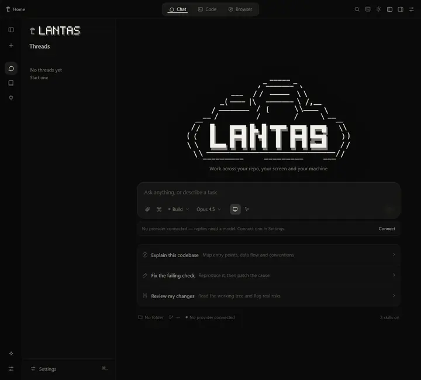
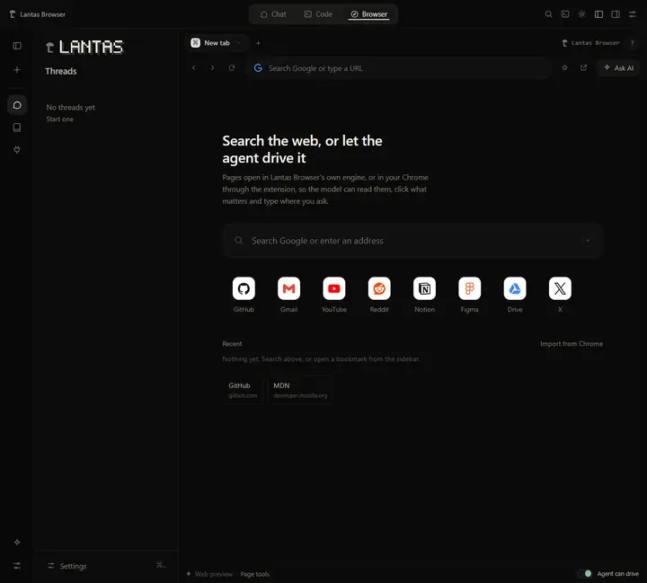

01 · chat
Ask anything, keep the thread
A thread per topic, with the model you chose. Attach files, images or a frame of your screen; rewind a turn, compact a long thread, or export it. ⌘K reaches every session, action and command.

Lantas 1.0.6 · free to download
One macOS window with a chat, a code workspace and a browser of its own. Ask about anything, change a repo, connect Gmail, Notion, GitHub or Linear, or hand it the tab you are looking at. Bring any model, run one locally, and pay nothing for the app: free, no account, no subscription.
open https://github.com/AnwarKalonov/Lantas-download/releases/latest
A drawing of the app, not live data. The page on the left, the agent on the right.
One run, start to finish
Search the web, or let the agent drive it
Recent
Everything in one window
Chat, code and the page in front of you, joined to the apps you already work in. The browser is one of six things Lantas does.
01 · chat
A thread per topic, with the model you chose. Attach files, images or a frame of your screen; rewind a turn, compact a long thread, or export it. ⌘K reaches every session, action and command.
02 · code
Point Lantas at a workspace and it reads the tree, edits as diffs you can apply or roll back, and commits through GitHub. Build, Plan and Chat decide whether it may write.
03 · your apps
Thirty-two toolkits through Composio — Gmail, Slack, Notion, Linear, Jira, Drive, HubSpot — plus read-only Gmail through your own OAuth client, and any MCP server you add.
04 · the browser
A browser of its own and a Chrome side panel. It reads the page exactly, clicks a control by its label rather than by coordinates, then re-reads the page to check what happened.
05 · skills
Thirteen procedures ship built in, from commits and review to debugging, test gaps, release notes and interface copy. Teach it your own skills, then wrap the work you repeat in slash commands that take arguments.
06 · models
Claude, GPT, Gemini, NVIDIA NIM, OpenRouter, Groq, Ollama or LM Studio. Keys live in the app's own storage, requests go straight to the provider, and there is no telemetry to switch off.
07 · the price
No subscription, no seats, no metering and nothing to upgrade: download it once and use it. Run a model on the same Mac and a task costs nothing at all. Bring a hosted key and that provider is the only thing that bills you — Lantas takes nothing on top.
The app, not a drawing
Chat, code and browser, captured from Lantas 1.0.6 while a task is running. The page you have been scrolling through is the site; these are the surfaces inside the app.



Screens from Lantas 1.0.6. The sample workspace is local; the app is free, and you bring the model key or run one on the same Mac.
The browser · observability
Understanding a page: the difference between looking at it and knowing what can be clicked.
This is the browser part, and it is where the other half of the app earns its keep. A checkout page is 42 controls, three forms and 900 words, and any one of them can be the thing you meant. A screenshot gives a model pixels and a guess about coordinates; a paste gives it whatever you selected. Lantas reads the DOM through the extension — roles, labels, values, what is visible and what is enabled — and asks the model what to do with that.
For each tab Lantas keeps the title, the address, the readable text, the controls with their labels, and the tab list. The page is read on demand, and nothing is sent anywhere until you ask a question about it.
All four come from the extension, a few times a second. No screenshots, no OCR, and no page data leaves your Mac until you ask.
The page is the only thing that knows what is clickable right now. A model that cannot read it is guessing from your description.
Every control has a label. Every request has words. The match is how much of one the other explains.
Most labels are obvious. A few are the whole problem. The figure scores fourteen controls from one checkout, and every point can be clicked.
The layout was fine when you left it. Then a deploy shipped a new button id, an A/B test moved the form, and every selector from last week's run is now a guess. By the time you look, an agent has spent an hour clicking the wrong thing politely.
Lantas re-reads the page after every action, and matches a control by its label before it ever falls back to a selector.
Reading the page
Instead of asking a model to guess what a button does from a picture, Lantas reads its role, its label and its state.
Lantas separates model reasoning from what the browser can answer exactly. The extension returns the controls that are visible and enabled, with their role and accessible name; the model chooses among them. Matching by label means a button that moved is still a button.
Every action is a step: the control, the label it matched, the confidence, and what the page said afterwards. Steps are deduplicated, so two identical clicks are one intent. Verification runs whether auto-act is on or off.
Steps carry an id, the control, how it matched and what happened. The second row is the same step, folded into the first.
The agent reads the page together with your request, and keeps what it read apart from what it guessed. Two further passes cover what one read misses: a check of the extension's own report — controls with no label, forms without a submit, a button that is disabled — and a re-read after every action to see whether the page did what the step claimed.
From request to result. Stages 2 and 3 are read from the page; 4 is model reasoning; 5 changes the tab; 6 and 7 check it. Click a stage.
Acting on the page
Every click is a step you can see, and the stop switch is one toggle away.
With the agent driving, Lantas can click, type and press Enter in the tab you have open, one step at a time. It clicks a control because of its label, not because of where it sat in a screenshot, and it asks before anything that spends money, sends a message or deletes something.
In the side panel, “Let Lantas act” is the switch. Turn it off and the agent still reads and answers, but every action is refused before it reaches the page.
The action loop. The last stage is why a click is safe to trust: the page is read again, and a failure is reported as a failure.
Illustrative: a proposed step, its application, and the rollback.
Verification
Each tool must finish the task in the user's own Chrome.
We wrote eleven tasks a person would do in a browser — book a table, apply a promo code, download a statement — and gave each tool the same Chrome window. Lantas ran on Claude Sonnet 4.5 with its own extension; Claude Code on Opus 4.1 with computer use; Antigravity on Gemini 3. Lantas finished all eleven at a mean of 1.8 minutes. Claude Code finished nine at 3.3 minutes, Antigravity eight at 3.6. The app itself is free, so the only bill is the model you point it at.
Time to finish, mean
1.8min
1.8 min Lantas · 3.3 Claude Code · 3.6 Antigravity
Price of the app
$0
Free · no account, no per-task fee
Tasks finished
11of 11
11 of 11 Lantas · 9 Claude Code · 8 Antigravity
| # | Task | Claude Code | Antigravity | Lantas |
|---|---|---|---|---|
| 1 | booking a restaurant table | 4.2 min | 5.1 min | 1.4 min |
| 2 | download an invoice PDF | missed | 3.4 min | 1.2 min |
| 3 | change the shipping address | 3.9 min | 4.6 min | 2.0 min |
| 4 | apply a promo code | 1.6 min | 2.2 min | 0.8 min |
| 5 | compare three flights | 4.4 min | 3.9 min | 2.8 min |
| 6 | file a receipt in a form | 3.2 min | 4.8 min | 1.9 min |
| 7 | cancel a subscription | 2.6 min | gave up | 1.5 min |
| 8 | fill a job application | 5.8 min | gave up | 3.4 min |
| 9 | book a dentist appointment | 2.1 min | 2.7 min | 1.1 min |
| 10 | download a bank statement | 1.9 min | 2.4 min | 1.3 min |
| 11 | reserve a hotel room | found, not booked | 3.6 min | 2.2 min |
| Mean over tasks finished | 3.3 min · 9 / 11 | 3.6 min · 8 / 11 | 1.8 min · 11 / 11 |
Table 1. Time to finish, per task. Antigravity was faster on task 5; Claude Code on task 2 by giving up early. Lantas finished every task.
Nothing in the app is metered: no subscription, no seats, no per-task fee, no account. The app itself is free, and the only thing that can cost money is the model you choose — run Ollama or LM Studio on the same Mac and a task costs nothing, or bring a hosted key and that provider bills you directly.
The work Lantas does itself is close to nothing: on a two-step task the DOM read is 0.06 s and the matching happens locally. The model turn is the task, and it is the only part anyone could charge for. Method and caveats are in the docs.
Where a two-step task spends its time.
Installation
Needs macOS 11 or newer. Chrome 116 or newer is only for the optional Chrome bridge; the built-in browser works on its own. Download the dmg for your Mac and drag it to Applications. Free: no account, no trial, no subscription.
Download the build for your Mac and drag Lantas.app to Applications. It opens with the chat, the code workspace and the browser in one window. The Chrome extension ships inside the app; the app shows you where it is and how to load it.
Bring a model key, or run a model on the same Mac. Settings takes Anthropic, OpenAI, OpenRouter, Groq, Google, NVIDIA NIM, Ollama, LM Studio or any OpenAI-compatible endpoint, and keeps the configuration in the app's own storage. Nothing is proxied through us.
Drop the app in Applications. The extension ships inside it, at Contents/Resources/chrome-extension.
Free, and it all runs on your Mac. Install Lantas.